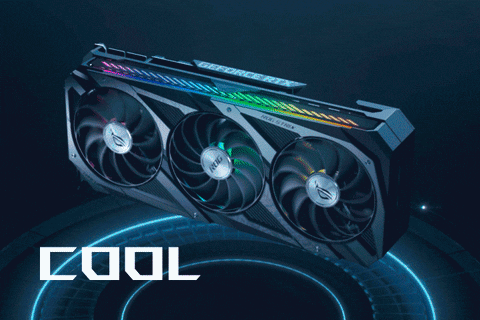

Targeta Grafica
¿Que es la Targeta Grafica o en ingles graphis Card?
Una tarjeta gráfica o tarjeta de video es una tarjeta de expansión de la tarjeta madre o motherboard del computador que se encarga de procesar los datos provenientes del procesador y transformarlos en información comprensible y representable en el dispositivo de salida (por ejemplo: monitor, televisor o proyector). Estas tarjetas utilizan una unidad de procesamiento gráfico o GPU, que muchas veces se usa erróneamente para referirse a la tarjeta gráfica en sí. También se les conoce como Adaptador de pantalla, Adaptador de vídeo, Placa de vídeo, y Tarjeta aceleradora de gráficos. Una tarjeta de video permite al usuario en términos generales jugar videojuegos, usar aplicaciones de edición de fotografía como Adobe Photoshop o GIMP, aplicaciones de edición de vídeo como Adobe Premiere o DaVinci Resolve y aplicaciones de dibujo asistido por computador como AutoCAD, Revit y ArchiCAD. También sirven para minar criptomonedas. Algunas tarjetas gráficas han ofrecido funcionalidades añadidas como sintonización de televisión, captura de vídeo, decodificación1 MPEG-2 y MPEG-4, o incluso conectores IEEE 1394 (Firewire), de mouse, lápiz óptico o joystick. Las tarjetas gráficas más comunes son las disponibles para el ordenador compatibles con la IBM PC, debido a la enorme popularidad de estas, pero otras arquitecturas también hacen uso de este tipo de dispositivos. Las tarjetas gráficas no son dominio exclusivo de los ordenadores personales (PC) compatibles IBM; contaron o cuentan con ellas dispositivos como por ejemplo: Commodore Amiga (conectadas mediante las ranuras Zorro II y Zorro III), Apple II, Apple Macintosh, Spectravideo SVI-328, equipos MSX y en las videoconsolas modernas, como la Nintendo Switch, la PlayStation 4 y la Xbox One.
Ya puedo hacer tabla prueba 1